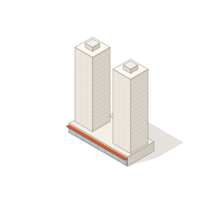
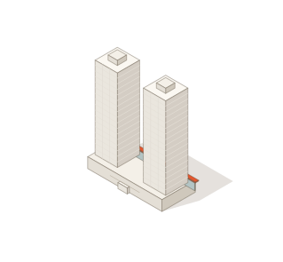
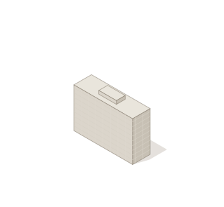
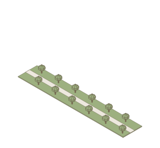
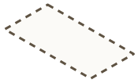
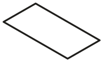
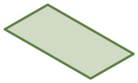
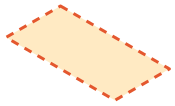

ЭТАП 4 · 1970–1972 · V2 · 25.09.2026
Двигаем коробки
Три типа домов, три зоны макета и одна ловушка, взятая из истории: девятиэтажки приходят первыми, и их хочется поставить на проспект. Башни появляются только после того, как посетитель «подождал» — нашёл девятиэтажкам другое место.
V3 · сложнее
Прототип v3 →Слотов нет. Макет — сетка 30×14 клеток по 8 м (видна едва-едва, как на коврике для резки). Дом прилипает к сетке в любом месте; под ним только нейтральный контур, без подсказки «можно / нельзя». Зоны не подписаны: их нужно понять из подсказок и реплик.
12 элементов: 5 девятиэтажек, 3 участка бульвара, 4 пары башен. Касание поворачивает любой дом: девятиэтажка и бульвар — на 90°, башни — на 4 стороны (витрины на север, восток, юг, запад).
Упаковка по ландшафту. В глубине микрорайона помещается ровно 5 девятиэтажек (проверено перебором). Три из них встают только повёрнутыми, в щели между лесом, прудом и старыми домами. Это и есть «двигал коробки, чтобы вписались в ландшафт» (факт 6).
Препятствия — лес, пруд, существующие дома, проезжая часть: на них не садится ничего, с отдельной репликой. Лес подходит к проспекту с запада — на юге помещается 4 пары башен плюс 2 клетки запаса, так что расстановку нужно продумать.
zone(row): 0–5 depth · 6–8 south · 9–10 road · 11–13 north
SIZE: tower 6×3 | 3×6, nine 5×2 | 2×5, boul 8×3 | 3×8
check(piece, c, r, orient):
cells = footprint(c, r, SIZE[type][orient])
if any cell is road → 'road'
if any cell is water → 'water'
if any cell is house → 'house'
if any cell is forest → 'forest'
if overlaps placed → 'busy' (не отказ)
zones = { zone(row) for cells }
if |zones| > 1 → 'cross_' + type // повернуть
if zone != HOME[type] → zone + '_' + type
tower & orient != front → sits, badge ↻ (мягко)
unlock towers: ≥ 2 nine placed
score: 3; −1 if rej ≥ 3; −1 if rej ≥ 7 or hints ≥ 2;
−1 if any tower faces the yard; min 1
road
Проспект — магистраль. На проезжей части не строят.
forest
Лес — часть города. Дома вписывают в ландшафт, а не ставят поверх него.
water
Пруд оставляем: дома вписывают в ландшафт.
house
Здесь уже стоят дома 4-го микрорайона.
cross_*
Пара башен выходит на проспект целиком · Дом залезает на соседний участок · Бульвар тянется вдоль проспекта — коснитесь, чтобы повернуть.
no_room
Для поворота здесь мало места — перетащите дом.
hint 2
Девятиэтажкам — место в глубине микрорайона, между лесом, прудом и старыми домами. Три из пяти встанут только повёрнутыми. [R4 — сверить]
hint 3
Пока вы держите дом, его зона подсвечена зелёным.
Файлы:
svg/stage4v3/ — доска, башни в 4 ракурсах, девятиэтажка и бульвар в 2, layout.json (сетка препятствий, проекция, якорь спрайта). Генератор — tools/stage4v3.js: меняете прямоугольники OBS → перегенерируете доску, перебор снова проверит вместимость. Время у стенда ≈ 70–120 с — дольше, чем просили в v2. Если много, уберите 2 девятиэтажки (останется 3, все без поворота) — выйдет ≈ 60 с. Сложность реализации поверх v2: сетка + снэп + проверка ≈ 1,5 ч, 4 ракурса и повороты на макете ≈ 1 ч.1 · Механика
Цель. Собрать Центральный проспект так, как решил Покровский: 8 элементов в 8 клеток макета.
Макет. Изометрия, север — к зрителю. Три зоны:
Север × 2
длинные клетки вдоль проспекта
Юг × 4участки вдоль проспекта
Глубина × 2за южными участками, среди существующих домов 4-го мкр
Лоток. 2 девятиэтажки, 2 бульвара, 4 пары 17-этажных башен на стилобате с магазинами. Башни сначала закрыты: «Ищут…».
Жесты. Перетаскивание — поставить или переставить. Касание пары башен (в лотке или на макете) — развернуть на 180°: витрины «к проспекту» или «во двор».
Правила и откуда они
R1 На севере — только бульвар
факт 1
жёсткое: не садится
R2 На юге — только башни с магазинами
факты 1, 3
жёсткое
R3 Девятиэтажки — не на проспект
факт 2
жёсткое
R4 Девятиэтажки — в глубине микрорайона
сверить
жёсткое
R5 Башни открываются после двух девятиэтажек
факт 2
порядок
R6 Витрины — к проспекту
факт 1
мягкое: садится, помечено ↻
R4 взято из
objects.json (towers-central: «поставить их в глубине 4-го микрорайона»). Этого нет в списке из 7 фактов — требует проверки. Если не подтвердится, глубину переименовать в «Отложено» и оставить как лоток-парковку, текст ok_nine поменять. Факт 7 (Меерсон) не используется.ПОЧЕМУ НЕ С ПЕРВОГО ЖЕСТА
Первыми в лотке — девятиэтажки. Естественный ход — поставить их на пустой проспект. Правило R3 это мягко отклоняет, и игрок впервые задумывается, куда ещё их деть. Второе «чуть подумать» — развернуть башни: 3 из 4 лежат в лотке витринами во двор.КАК ЗАКАНЧИВАЕТСЯ
8 из 8 → «Сравнить с Покровским». Слева план игрока, справа схема Покровского, пометки об отличиях, «архитектурное чутьё» 1–3 и факт про Никсона. Если витрины смотрят во двор — «Развернуть витрины» возвращает на макет. «Дальше» → 3D-рост 4-го мкр и карточка башен.ВРЕМЯ
8 перетаскиваний по ~4 с + 1–3 отказа + 3 разворота + чтение реплик ≈ 45–80 с. Без единой ошибки и подсказок — около 35 с.2 · Логика проверки
HOME = { nine: 'depth', boul: 'north', tower: 'south' }
onDragStart(piece):
if piece.type == 'tower' and not unlocked and piece.cell == null:
say('locked'); cancel // R5, не считается отказом
onDrop(piece, point):
cell = polygonHit(point + (0, 30)) ?? nearestCenter(point, ≤ 70px)
if cell == null: return toTray(piece)
if cell.occupied: say('busy'); return toTray(piece) // не отказ
zoneOk = HOME[piece.type] == cell.zone // R1–R4
orientOk = piece.type != 'tower' or piece.orient == 'front' // R6
if not zoneOk or (STRICT_ORIENT and not orientOk):
rejections += 1
showRejected(piece, cell) // подъём −22px, тёплый контур, клетка #FFD98A
say(zone_type_key) // см. тексты
after 1100ms: toTray(piece)
return
place(piece, cell)
if count(nine placed) == 2 and not unlocked:
unlocked = true; say('arrived') // башни появляются в лотке
elif all 8 placed: say('done'); show button 'Сравнить'
else say(orientOk ? ok_[type] : 'back_tower')
onTap(piece): // pointerup, сдвиг < 10px
if piece.type == 'tower': piece.orient = flip(piece.orient)
hint(n): hints += 1 (общий счётчик игры), n ≤ 3
n == 3 → во время drag клетки HOME[type] зелёные, прочие приглушены
score():
s = 3
if rejections ≥ 2: s -= 1
if rejections ≥ 5 or hintsHere ≥ 2: s -= 1
if towersBackFacing > 0: s -= 1
return max(1, s)
Координаты клеток и якорь спрайта — svg/stage4/layout.json (полигоны в px доски 884×600, центр клетки, якорь элемента ax 160 / ay 203 при размере спрайта 319×295).
3 · Элементы

piece-towers-pair-front.svg
piece-towers-pair-back.svg
piece-nine-storey.svg
piece-boulevard.svg




board.svg — 884×600, та же проекция, что у элементов; клетки уже нанесены тонкой линией. Позиции домов 4-го мкр и леса — условные, при желании заменить рендером из OSM с той же камерой.4 · Как у Покровского

План сверху, не в масштабе: четыре пары башен на южной стороне с магазинами к проспекту, бульвар на севере, девятиэтажки в глубине (R4 — сверить). Реальные позиции пар снять с OSM и перерисовать — сейчас они равномерные.
6 · Сложность
Доска + спрайты по layout.json, drag, попадание в полигон
1 ч
Зоны R1–R4, отказ с анимацией и репликой
1 ч
Закрытые башни (R5)
20 мин
Разворот тапом (tap vs drag, 2 спрайта)
40 мин
Лестница подсказок + подсветка клеток
30 мин
Итог: сравнение, оценка, факт
1 ч
Дольше: доска из OSM-рендера вместо board.svg и реальные позиции пар
2+ ч
Если нет времени: убрать разворот и сравнение-план
≈ 3 ч
5 · Тексты
Голос справки. Покровский — только в третьем лице. Ключи совпадают с кодом прототипа.
task
Проспект хотели застроить обычными девятиэтажками. Расставьте дома так, как решил Покровский.
start
Возьмите дом из лотка и перетащите его на макет.
hint 1
Проспект — магистраль. На северной стороне задуман прогулочный бульвар, на южной — магазины.
hint 2
Девятиэтажкам нашлось место в глубине микрорайона, подальше от проспекта. [R4 — сверить]
hint 3
Башни — на южную сторону, витрины к проспекту. Пока вы держите дом, подходящие места подсвечены.
north_*
Северная сторона — прогулочный бульвар. Дома здесь не ставят.
south_nine
Проспект хотели застроить обычными девятиэтажками. Покровский предложил подождать.
*_boul
Бульвар идёт вдоль проспекта, по его северной стороне.
depth_tower
Магазины в нижних этажах башен должны выходить на проспект.
busy
Здесь уже стоит дом.
locked
Проект для проспекта ещё ищут. Сначала найдите место девятиэтажкам.
arrived
Покровский нашёл проект: парные 17-этажные башни с магазинами внизу.
ok_nine
Девятиэтажка встала в глубине микрорайона. Проспект подождёт.
ok_boul
Бульвар — на северной стороне, для прогулок.
ok_tower
Магазины выходят на проспект.
back_tower
Витрины смотрят во двор. Коснитесь башен, чтобы развернуть их к проспекту.
done
Макет собран. Сравним с Покровским?
score 3 / 2 / 1
Чутьё главного архитектора · Почти как на макете Покровского · Проспект собран — сравните с Покровским
fact
Башни сдали досрочно — к визиту президента США Никсона 25 мая 1972 года. Визит отменили.